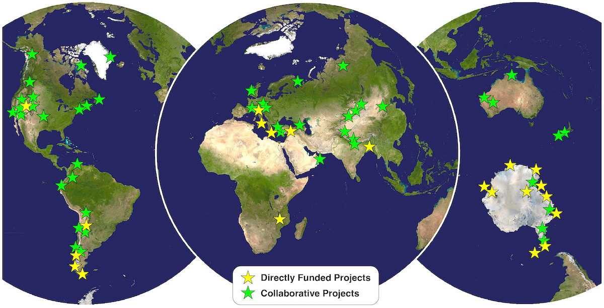
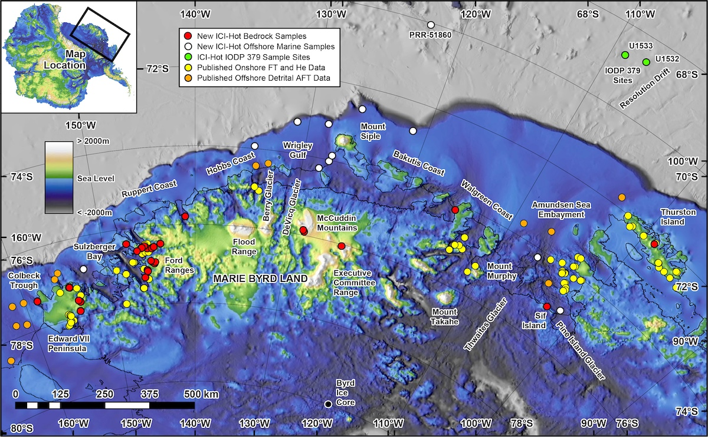

Dr. Stuart N. Thomson Department of Geosciences University of Arizona
About Me
RESEARCH INTERESTS
My primary research interest is applying low-temperature thermochronology (fission track analysis and (U-Th)/He dating) and U-Pb geochronology to investigate timing and rates of geologic processes related to regional tectonics, structural geology, tectonic geomorphology, sedimentary provenance and routing systems, as well as the interactions between landscape evolution, erosion processes and past climate change.
BRIEF BIO
I was born and brought up in the southeast of the UK near the town of Maidstone in the county of Kent. I received a BSc degree in geology from Durham University, UK, and a PhD from University College London. It was during my PhD that I first became enamored with fission tracks in the laboratory of Prof. Tony Hurford. I then moved to the Ruhr-Universität Bochum, Germany as a postdoc working with Prof. Bernhard Stöckhert and Dr. Manfred Brix mainly on projects applying thermochronology to investigate the regional tectonics of Crete and southern Chile. In 2003 I moved to Yale University in the US to work as a postdoc with Profs. Mark Brandon and Peter Reiners on applying fission track and (U-Th)/He thermochronology to projects in the northern Apennines, Italy and the Patagonian Andes. I finally moved to the University of Arizona in 2008 as a Research Scientist. Here I initially worked on developing apatite U-Pb dating at the Arizona LaserChron Center, and establishing the University of Arizona Fission Track Laboratory. Since then I have been a Principal Investigator on numerous collaborative National Science Foundation awards working on projects as far afield as Antarctica, Patagonia, Central Turkey, and the Indo-Burma Ranges of India, Bangladesh and Myanmar.
Research on Every Continent

Recent Research Projects
Collaborative Research: ICe sheet erosional Interaction with Hot geotherm in West Antarctica (ICI-Hot) Funded by NSF Office of Polar Programs (PLR1917009) In collaboration with Christine Siddoway at Colorado College and Christian Teyssier at the University of Minnesota.
This project addresses the following questions:
When did West Antarctica become high enough for a large ice sheet to form?
What was the regional pre-glacial topography?
Under what climate conditions, and at what point in the growth of an ice sheet, did glaciers begin to cut sharply into bedrock to form the narrow troughs that flow seaward?
The research will lead to greater understanding of past Antarctic ice sheet fluctuations and identify precise timing of glacial incision. These results will refine ice sheet history and aid the international societal response to contemporary ice sheet change and its global consequences.

Collaborative Research: Subduction below extreme sedimentation: A multidisciplinary transect from the Ganges-Brahmaputra Delta (Tripartite) Funded by NSF Integrated Earth Systems (EAR1713893) In collaboration with Columbia University (Lead Institution), Louisiana State University, University of Missouri.
This project focuses on understanding the poorly understood eastward-directed subduction and accretion of the Ganges-Brahmaputra Delta - the world's thickest sedimentary basin at up to 19 km thick - to form the Indo-Burma Ranges of Bangladesh, India, and Myanmar. Multiple disciplines are being employed, including seismology, GPS, magnetotellurics, gravimetry, structural geology, geochemistry, and low-temperature thermochronology, in a transect from the deformation front to the back-arc.
Research focuses on a number of major issues including:
Reconstructing Neogene growth and structure of the >200km-wide accretionary prism across the Indo-Burma Ranges.
Geophysical imaging of the active structures within the thick sedimentary package, the deeper crustal structures, and the subducting slab
Obtaining information on the distribution of fluids, the nature of volcanism and potential for earthquake slip, and thus assessing earthquake hazard in a region with a population of over 140 million.
Examining older (and deeper) parts of the ancient Ganges-Brahmaputra Delta system exposed in the Indo-Burma Ranges to understand more fully the timing and nature of delta progradation, and its relationship to Himalayan and Indo-Burma Ranges orogenesis and erosion history.
Collaborative Research: East Antarctic Glacial Landscape Evolution (EAGLE): A study using combined thermochronology, geochronology and provenance analysis Sept 2016 - August 2022 Funded by NSF Office of Polar Programs (PLR1443556) In collaboration with Peter Reiners at the University of Arizona, Sidney Hemming at Columbia University / Lamont-Dogerty Earth Observatory, Kathy Licht at Indiana University - Purdue University Indianapolis (IUPUI) and David Shuster at University of California Berkeley
Project Outcomes Report Antarctica is almost entirely covered by ice, in places over two miles thick. This ice hides a landscape that is less well known than the surface of Mars and represents one of the last unexplored frontiers on Earth. Ice-penetrating radar images provide a tantalizing glimpse of this landscape including mysterious entombed mountains larger than the European Alps and huge fjords twice as deep as the Grand Canyon. But radar cannot tell us when these features formed. In the past, under warmer climate than today, the amount of ice in Antarctica waxed and waned leading to significant sea-level change. A key to understanding how ice will react to future warming climate and impact sea-level is being able to replicate how such ice reacted to known past climate change. To gain this understanding requires an accurate picture of the former landscape over which this ice first formed and flowed.
One way this project tackled these goals was by using ancient sand collected by drilling expeditions from beneath the sea-floor off the coast of Antarctica. This sand was supplied from the continent interior by glaciers, and earlier by ancient rivers before Antarctica first became ice-covered around 34 million years ago. The project also studied bedrock samples from remote ice-free parts of the central Transantarctic Mountains. The primary activity was applying multiple advanced dating techniques to single mineral grains contained within this sand and rock. These dates, in some cases the first from this part of Antarctica, have provided significant new insight into how the landscape of Antarctica eroded over the many tens of millions of years during which sand was deposited offshore. Field work for the project was conducted as part of an NSF deep field camp to the Shackleton Glacier in late 2017, and the project also made cost-effective use of pre-existing sample collections housed at NSF facilities including the U.S. Polar Rock Repository, the Gulf Coast Core Repository, and the Oregon State University Marine and Geology Repository (formerly the Antarctic Marine Geology Research Facility).
One of the key findings was discovering that the major glacial valleys cutting across the central Transantarctic Mountains, some of which have been carved to several kilometers below sea level, formed rapidly within a few million years. We were also able to determine that this took place at the same time as major global climate cooling that led to the first continental scale glaciations covering Antarctica some 34 million year ago. Obtaining information on how and when these valleys formed, and how they impacted the uplift and subsequent erosion of the Transantarctic Mountains, is key to addressing the still debated cause of the 34-million-year-old global cooling episode, as well as how the Antarctic landscape interacts with the growth and retreat of glaciers and ice sheets in response to past and future climate change.
Under Construction Will Add New Content and Older Research Projects When I Get The Chance!